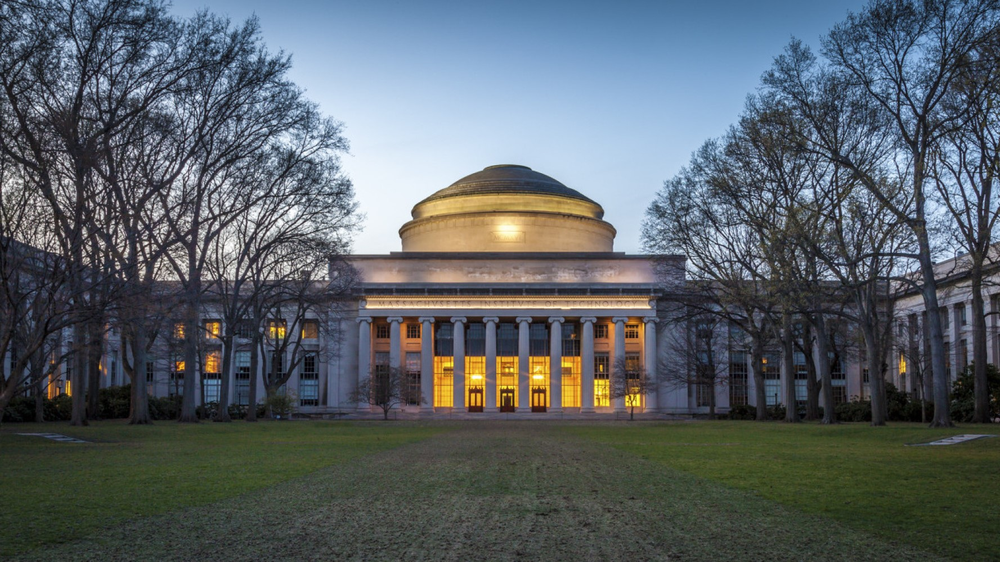

MIT

MIT is the world's premier STEM institution. I'm course 2-A6, Mechanical Engineering with a dash of Computer Science. I am also concentrating in Philosophy, specifically regarding cognition and philosophy of mind.